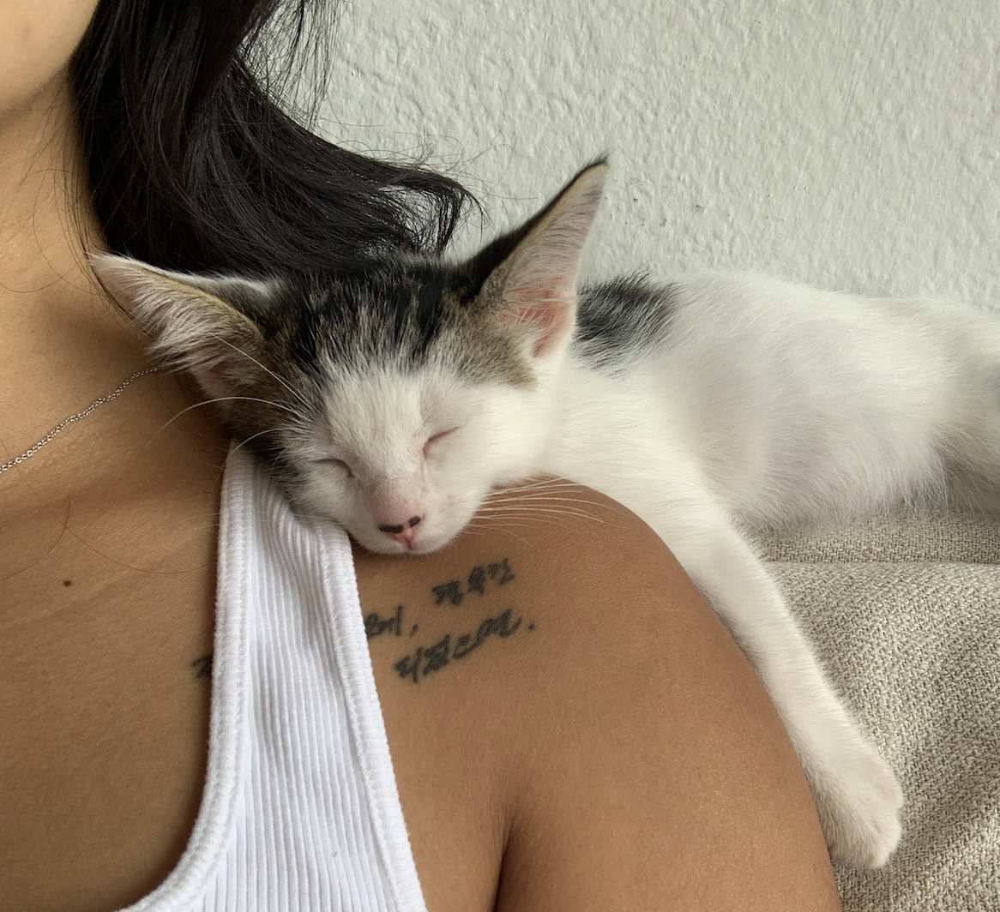
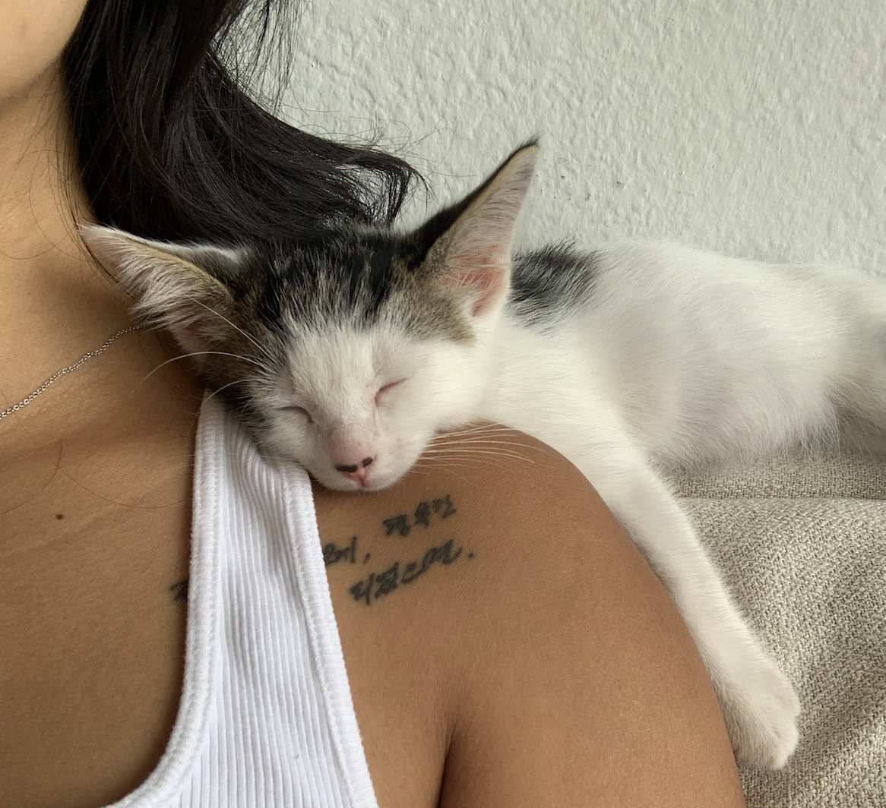

About Me
Background
Hi and thank you for visiting my page to get to know me! I'm originally from Orange Country, California but grew up in Las Vegas, Nevada (colloquially the 9th island of Hawai'i!). I'm very happy to be back under the sun in Hawai'i after four (cold) years of college in New York. When I'm not doing academic things, you can find me hiking, skateboarding, eating, or (most likely) doting on my rescue kitten Calcifer. I also dabble in drawing and tattooing, just for fun. One of my biggest influences and roles models in life is my sister, Jane, who is also working toward a PhD!
Education
M.S. Earth and Planetary Sciences, School of Ocean and Earth Sciences and Technology, University of Hawai'i at Mﾄ］oa, Honolulu, HI
B.A. Astronomy (Honors) and Cognitive Science with minor in Chemistry, Vassar College, Poughkeepsie, NY
Research Interests
I'm broadly interested in all things star-planet interactions. I primarily study stellar rotation, multiplicity, and activity of young M dwarfs, as well as the disks and planetary systems around them. I use IR spectrographs on Mauna Kea to look for binary systems, measure radial velocities, and measure magnetic field strengths.
Research
Waves2Worlds Research Group. PI: Eric Gaidos, UH Mﾄ］oa
Obtaining, reducing, and analyzing IR data from Maunakea Observatories and other sources to study the rotation and activity of young M dwarf stars and the implications for the evolution of their planets; observational campaign to detect and measure the stellar masses of companions in binary systems.
- 2021 NExSci Carl Sagan Summer Workshop, poster presentation
- Gaidos, E. et al. 2021 including Lee, R. A. (press release)
iSHELL Precision Radial Velocity Team. PI: Peter Plavchan, George Mason Univerity
Collaborator and observer for IR spectroscopic follow-up of TESS Objects of Interest, detecting and characterizing exoplanets around M Dwarf stars by radial velocity analysis.
MAVEN IUVS Science Team. PI: Sonal Jain, CU Boulder
Operated and optimized laboratory vacuum chamber equipment, electron gun, and flight spare spectrographs (MAVEN IUVS, GOLD) to obtain electron impact-induced fluorescence spectra from common planetary gases; developed data reduction and visualization routines.
Calcifer
Calcifer is my rescue kitten. He was born in October 2021 in the streets of Ewa along with five siblings, who were all abandoned by their parents. A fellow graduate student fostered them, and one day we all got a random email from her offering up free kittens. I was immediately drawn to Cal's unique eyes. At first, I didn't think I could handle such a young kitten, so I convinced my friends to adopt him (so I could selfishly play with him without any responsibility). When we went to meet him and his siblings, he ran into my arms and I just couldn't let him go, so the friends ended up adopting one of his sisters and I got Cal. He is extremely clingy, cuddly, and playful, in my opinion much more so than most cats. Even as I am setting up this website, he is laying on my arm and making it difficult to type. He always greets me with loud meows after a day at the office, and won't sleep at night unless I'm next to him. He is also a surprisingly good hunter. To my dismay, he has gifted me a live B52 cockroach and small bird before. I suppose he's still an alley cat at heart.

 


Contact
Please do not hesitate to reach out to me via email about any questions you may have about my research, graduate school experience, outreach projects, etc.
Email: renaalee [at] hawaii [dot] edu
Address: POST 528, UH Mﾄ］oa main campus